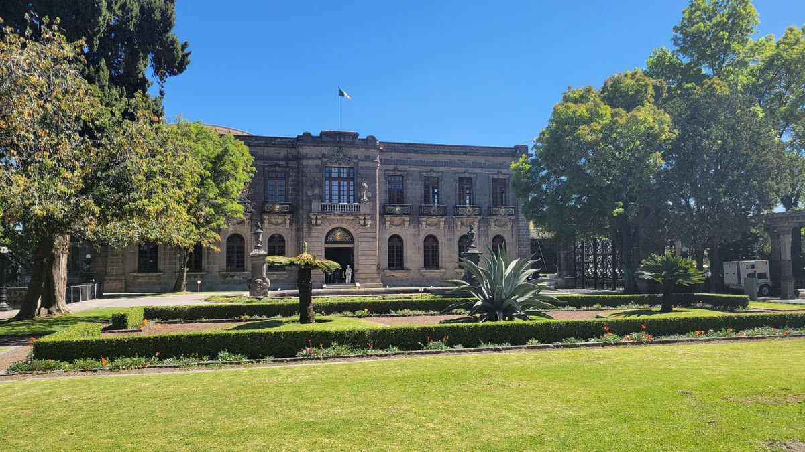
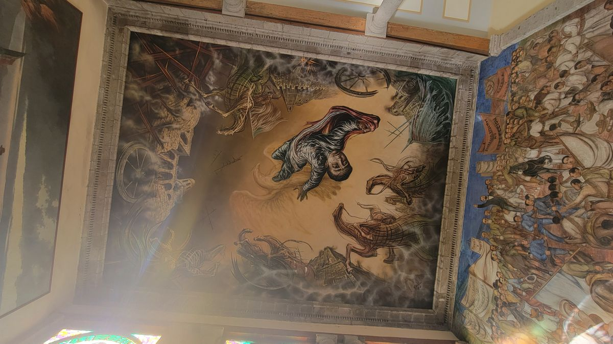
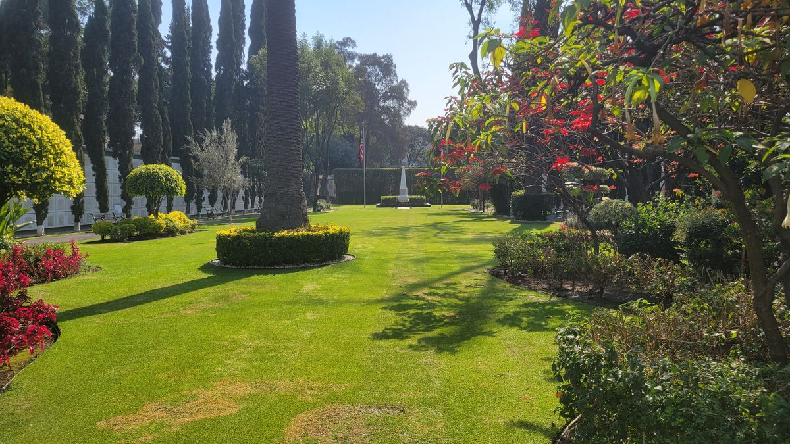
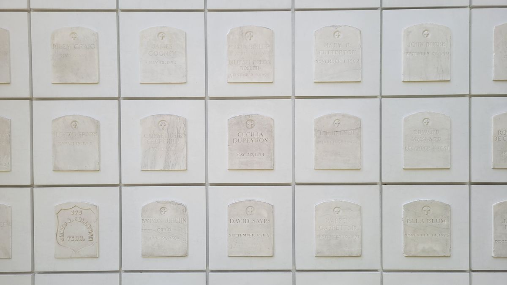

At 18 years old, fresh out of high school, I enlisted in the United States Marine Corps. I served for one, 5-year enlistment. Even though the time spent was nothing but a speed bump on the road of life, being a member of an an organization of that caliber will influence your persona for the rest of your life.
The Marine Corps hymn famously begins with the words, “From the Halls of Montezuma…” Montezuma being the colloquial term for Chapultepec Castle in Mexico City. Chapultepec Castle sits atop a hill in what is now the heart of the bustling metropolis of México City. At the time the lyrics came to be it was an outpost on the city’s edge. It housed the new Republic’s military academy. Though it was built in 1785 to house the Viceroy of New Spain. One of only 2 palaces to house European royalty in the new world.

Battle for Chapultepec
The Marine’s story takes place in September of 1847 at the Battle of Chapultepec during the Mexican-American war. I will preface the rest of this post as saying the Mexican-American war was one of, if not the most un-American wars ever fought. Based on a lie, rooted in Manifest Destiny and racism, the Mexican-American war is a blemish on our nation.
Abraham Lincoln stated the war was “immoral…a threat to our nation’s republican values.”
Ulysses S. Grant, who was a fresh Lieutenant during the campaign had the opinion it was “one of the most unjust [wars] ever waged by a stronger against a weaker nation.”
450 Marines were present in México since the landing in Veracruz to begin the campaign towards the capital. Only 40 Marines were present at the Battle of Chapultepec. 30 became casualties. In Marine Corps lore, the red stripe worn on the trousers of Officers and Non-commissioned Officers, represents the blood shed by those men at that battle (not entirely true though, as Marines wore red stripes on their trousers since before the battle).
The loss was an embarrassing defeat to the Mexican forces. General Nicolas Bravo was responsible for the defense of Mexico City and was routed by U.S. MajGen Winfield Scott. Scott feigned an attack on the city’s southern causeways. The actual attack came on the morning of September 13th on Chapultepec Castle on the city’s western edge. The castle was hardly defended with only 3 guns, a few hundred troops, including cadets from the military academy. The capture of the Castle and the hill allowed U.S. forces unresticted access to the Mexican Capital.
Besides a small exhibit about the U.S. Invasion (what the Mexican’s call the Mexican-American war), there is almost no mention about American forces in the castle. The story they tell is that of Los Niños Héroes, The Boy Hero’s.
Los Niños Héroes
Shortly after American forces began an artillery bombardment on the castle, General Nicolas Bravo had realized his mistake and ordered the retreat from the castle to spare the lives of the young cadets housed there. 5 cadets and 1 Lieutenant instructor (ages 13-19) defied the order and decided to fight and defend their school and home. Their decision not to retreat stemmed from their unwavering sense of duty, patriotism, and honor. They believed that abandoning their post would be a betrayal of their country and their comrades. Despite being vastly outnumbered and facing overwhelming odds, the Niños Héroes chose to stand their ground and fight to the end, demonstrating extraordinary courage and sacrifice in the face of adversity.
In the main garden of the castle sits the Torre Caballero Alto, The Tall Gentlemen. Atop the tower the Mexican national flag is flown, and was on that morning. The legend is that instructor, Lieutenant Juan Escutia climbed the tower and removed the flag. He draped himself in it and jumped to his death, preventing the flag from falling into enemy hands.

The narrative of the Niños Héroes reflects the enduring legacy of national pride and unity. Their sacrifice became a rallying cry for Mexicans, galvanizing the nation's spirit and fostering a sense of solidarity in the midst of conflict. The story continues to resonate with Mexicans of all generations, reminding them of the importance of honoring their heritage and standing up for what they believe in.

Historians will admit discrepancies in the story of Los Niños Heroes though. Most notably the flag and Lt. Escutias jump. The flag that was flown from the tower that day was taken back to West Point as a war trophy. It was returned to México in 1942 as a gesture of goodwill towards the Mexican Republic.
Overall, the theme of the Los Niños Héroes story encapsulates the timeless values of courage, sacrifice, and patriotism, serving as a powerful reminder of the indomitable human spirit in the pursuit of freedom and justice. Today streets, boulevards, schools and even Metro stations in the nation’s capital are named in remembrance of Los Niños Heroes and on September 12 the country celebrates their sacrifice with a national Holiday.

American National Cemetery, Mexico City
I imagine theres a lot of people who have lived their entire lives in Mexico City, but don't know of the existence of The American National Cemetery. Located in the San Rafael neighborhood, on a sliver of land bordered by a 6 lane thoroughfare on one side and a bustling neighborhood on the other, the tall concrete walls keep out much of the noise from the metropolis outside. Just a few acres in size it's well manicured grounds are easy to overlook with all the hustle and bustle of the continents largest city. Established in 1851 and maintained by the American Battlefield Monuments Commission (the same agency that maintains the more famous Cemeteries in Europe and Asia) the grounds are the final resting place for Soldiers and Marines who died during the Mexican-American conflict.



TO THE HONORED MEMORY
OF 750 AMERICANS
KNOWN BUT TO GOD
WHOSE BONES COLLECTED
BY THEIR COUNTRY'S ORDER
ARE HERE BURIED
The cemetery's presence in Mexico City is a testament to the historical complexities and intertwined destinies of the two neighboring nations. Its establishment reflects the shared history, mutual respect, and the sacrifices made by American soldiers on foreign soil. The site symbolizes the deep-rooted ties between the United States and Mexico, transcending borders and fostering a sense of unity and remembrance.
Conclusion
In conclusion, the Battle of Chapultepec and the narrative of Los Niños Héroes serve as enduring testaments to the resilience and unwavering commitment to duty and honor. These stories transcend time, reminding us of the extraordinary bravery and sacrifice displayed in the face of adversity. As we commemorate the shared history between the United States and Mexico, let us draw inspiration from these tales of courage and patriotism. They remind us of the profound impact individuals can have in shaping the course of history, and the importance of honoring their legacies for generations to come.